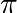

6. Matplotlib¶
6.1. Introduction¶
matplotlib is probably the single most used Python package for 2D-graphics. It provides both a very quick way to visualize data from Python and publication-quality figures in many formats. We are going to explore matplotlib in interactive mode covering most common cases. We also look at the class library which is provided with an object-oriented interface.
6.2. IPython¶
IPython is an enhanced interactive Python shell that has lots of interesting features including named inputs and outputs, access to shell commands, improved debugging and many more. When we start it with the command line argument -pylab, it allows interactive matplotlib sessions that has Matlab/Mathematica-like functionality.
6.3. pylab¶
pylab provides a procedural interface to the matplotlib object-oriented plotting library. It is modeled closely after Matlab(TM). Therefore, the majority of plotting commands in pylab has Matlab(TM) analogs with similar arguments. Important commands are explained with interactive examples.
6.4. Simple Plots¶
Let’s start an interactive session:
$python ipython.py -pylab
This brings us to the IPython prompt:
IPython 0.8.1 -- An enhanced Interactive Python.
? -> Introduction to IPython's features.
%magic -> Information about IPython's 'magic' % functions.
help -> Python's own help system.
object? -> Details about 'object'. ?object also works, ?? prints more.
Welcome to pylab, a matplotlib-based Python environment.
For more information, type 'help(pylab)'.
In [1]:
Now we can make our first, really simple plot:
In [1]: plot(range(10))
Out[1]: [<matplotlib.lines.Line2D instance at 0x01AA26E8>]
In [2]:
The numbers form 0 through 9 are plotted:

Now we can interactively add features to or plot:
In [2]: xlabel('measured')
Out[2]: <matplotlib.text.Text instance at 0x01A9D210>
In [3]: ylabel('calculated')
Out[3]: <matplotlib.text.Text instance at 0x01A9D918>
In [4]: title('Measured vs. calculated')
Out[4]: <matplotlib.text.Text instance at 0x01A9DF80>
In [5]: grid(True)
In [6]:
We get a reference to our plot:
In [6]: my_plot = gca()
and to our line we plotted, which is the first in the plot:
In [7]: line = my_plot.lines[0]
Now we can set properties using set_something methods:
In [8]: line.set_marker('o')
or the setp function:
In [9]: setp(line, color='g')
Out[9]: [None]
To apply the new properties we need to redraw the screen:
In [10]: draw()
We can also add several lines to one plot:
In [1]: x = arange(100)
In [2]: linear = arange(100)
In [3]: square = [v * v for v in arange(0, 10, 0.1)]
In [4]: lines = plot(x, linear, x, square)
Let’s add a legend:
In [5]: legend(('linear', 'square'))
Out[5]: <matplotlib.legend.Legend instance at 0x01BBC170>
This does not look particularly nice. We would rather like to have it at the left. So we clean the old graph:
In [6]: clf()
and print it anew providing new line styles (a green dotted line with crosses for the linear and a red dashed line with circles for the square graph):
In [7]: lines = plot(x, linear, 'g:+', x, square, 'r--o')
Now we add the legend at the upper left corner:
In [8]: l = legend(('linear', 'square'), loc='upper left')
The result looks like this:

6.4.1. Exercises¶
- Plot a simple graph of a sinus function in the range 0 to 3 with a step size of 0.01.
- Make the line red. Add diamond-shaped markers with size of 5.
- Add a legend and a grid to the plot.
6.5. Properties¶
So far we have used properties for the lines. There are three possibilities to set them:
1) as keyword arguments at creation time: plot(x, linear, 'g:+', x, square, 'r--o').
- with the function setp: setp(line, color='g').
- using the set_something methods: line.set_marker('o')
Lines have several properties as shown in the following table:
| Property | Value |
|---|---|
| alpha | alpha transparency on 0-1 scale |
| antialiased | True or False - use antialised rendering |
| color | matplotlib color arg |
| data_clipping | whether to use numeric to clip data |
| label | string optionally used for legend |
| linestyle | one of - : -. - |
| linewidth | float, the line width in points |
| marker | one of + , o . s v x > <, etc |
| markeredgewidth | line width around the marker symbol |
| markeredgecolor | edge color if a marker is used |
| markerfacecolor | face color if a marker is used |
| markersize | size of the marker in points |
There are many line styles that can be specified with symbols:
| Symbol | Description |
|---|---|
| - | solid line |
| – | dashed line |
| -. | dash-dot line |
| : | dotted line |
| . | points |
| , | pixels |
| o | circle symbols |
| ^ | triangle up symbols |
| v | triangle down symbols |
| < | triangle left symbols |
| > | triangle right symbols |
| s | square symbols |
| + | plus symbols |
| x | cross symbols |
| D | diamond symbols |
| d | thin diamond symbols |
| 1 | tripod down symbols |
| 2 | tripod up symbols |
| 3 | tripod left symbols |
| 4 | tripod right symbols |
| h | hexagon symbols |
| H | rotated hexagon symbols |
| p | pentagon symbols |
| | | vertical line symbols |
| _ | horizontal line symbols |
| steps | use gnuplot style ‘steps’ # kwarg only |
Colors can be given in many ways: one-letter abbreviations, gray scale intensity from 0 to 1, RGB in hex and tuple format as well as any legal html color name.
The one-letter abbreviations are very handy for quick work. With following you can get quite a few things done:
| Abbreviation | Color |
|---|---|
| b | blue |
| g | green |
| r | red |
| c | cyan |
| m | magenta |
| y | yellow |
| k | black |
| w | white |
Other objects also have properties. The following table list the text properties:
| Property | Value |
|---|---|
| alpha | alpha transparency on 0-1 scale |
| color | matplotlib color arg |
| family | set the font family, eg sans-serif, cursive, fantasy |
| fontangle | the font slant, one of normal, italic, oblique |
| horizontalalignment | left, right or center |
| multialignment | left, right or center only for multiline strings |
| name | font name, eg, Sans, Courier, Helvetica |
| position | x,y location |
| variant | font variant, eg normal, small-caps |
| rotation | angle in degrees for rotated text |
| size | fontsize in points, eg, 8, 10, 12 |
| style | font style, one of normal, italic, oblique |
| text | set the text string itself |
| verticalalignment | top, bottom or center |
| weight | font weight, e.g. normal, bold, heavy, light |
6.5.1. Exercise¶
- Apply different line styles to a plot. Change line color and thickness as well as the size and the kind of the marker. Experiment with different styles.
6.6. Text¶
We’ve already used some commands to add text to our figure: xlabel ylabel, and title.
There are two functions to put text at a defined position. text adds the text with data coordinates:
In [2]: plot(arange(10))
In [3]: t1 = text(5, 5, 'Text in the middle')
figtext uses figure coordinates form 0 to 1:
In [4]: t2 = figtext(0.8, 0.8, 'Upper right text')

matplotlib supports TeX mathematical expression. So r'$\pi$' will show up as:

If you want to get more control over where the text goes, you use annotations:
In [4]: ax.annotate('Here is something special', xy = (1, 1))
We will write the text at the position (1, 1) in terms of data. There are many optional arguments that help to customize the position of the text. The arguments textcoords and xycoords specifies what x and y mean:
| argument | coordinate system |
|---|---|
| figure points | points from the lower left corner of the figure |
| figure pixels | pixels from the lower left corner of the figure |
| figure fraction | 0,0 is lower left of figure and 1,1 is upper, right |
| axes points | points from lower left corner of axes |
| axes pixels | pixels from lower left corner of axes |
| axes fraction | 0,1 is lower left of axes and 1,1 is upper right |
| data | use the axes data coordinate system |
If we do not supply xycoords, the text will be written at xy.
Furthermore, we can use an arrow whose appearance can also be described in detail:
In [14]: plot(arange(10))
Out[14]: [<matplotlib.lines.Line2D instance at 0x01BB15D0>]
In [15]: ax = gca()
In [16]: ax.annotate('Here is something special', xy = (2, 1), xytext=(1,5))
Out[16]: <matplotlib.text.Annotation instance at 0x01BB1648>
In [17]: ax.annotate('Here is something special', xy = (2, 1), xytext=(1,5),
....: arrowprops={'facecolor': 'r'})
6.6.1. Exercise¶
- Annotate a line at two places with text. Use green and red arrows and align it according to figure points and data.
6.7. Ticks¶
6.7.1. Where and What¶
Well formated ticks are an important part of publishing-ready figures. matplotlib provides a totally configurable system for ticks. There are tick locators to specify where ticks should appear and tick formatters to make ticks look like the way you want. Major and minor ticks can be located and formated independently from each other. Per default minor ticks are not shown, i.e. there is only an empty list for them because it is as NullLocator (see below).
6.7.2. Tick Locators¶
There are several locators for different kind of requirements:
| Class | Description |
|---|---|
| NullLocator | no ticks |
| IndexLocator | locator for index plots (e.g. where x = range(len(y)) |
| LinearLocator | evenly spaced ticks from min to max |
| LogLocator | logarithmically ticks from min to max |
| MultipleLocator | ticks and range are a multiple of base; either integer or float |
| AutoLocator | choose a MultipleLocator and dynamically reassign |
All of these locators derive from the base class matplotlib.ticker.Locator. You can make your own locator deriving from it.
Handling dates as ticks can be especially tricky. Therefore, matplotlib provides special locators in ``matplotlib.dates:
| Class | Description |
|---|---|
| MinuteLocator | locate minutes |
| HourLocator | locate hours |
| DayLocator | locate specified days of the month |
| WeekdayLocator | locate days of the week, e.g. MO, TU |
| MonthLocator | locate months, e.g. 10 for October |
| YearLocator | locate years that are multiples of base |
| RRuleLocator | locate using a matplotlib.dates.rrule |
6.7.3. Tick Formatters¶
Similarly to locators, there are formatters:
| Class | Description |
|---|---|
| NullFormatter | no labels on the ticks |
| FixedFormatter | set the strings manually for the labels |
| FuncFormatter | user defined function sets the labels |
| FormatStrFormatter | use a sprintf format string |
| IndexFormatter | cycle through fixed strings by tick position |
| ScalarFormatter | default formatter for scalars; autopick the fmt string |
| LogFormatter | formatter for log axes |
| DateFormatter | use an strftime string to format the date |
All of these formatters derive from the base class matplotlib.ticker.Formatter. You can make your own formatter deriving from it.
Now we set our major locator to 2 and the minor locator to 1. We also format the numbers as decimals using the FormatStrFormatter:
In [5]: major_locator = MultipleLocator(2)
In [6]: major_formatter = FormatStrFormatter('%5.2f')
In [7]: minor_locator = MultipleLocator(1)
In [8]: ax.xaxis.set_major_locator(major_locator)
In [9]: ax.xaxis.set_minor_locator(minor_locator)
In [10]: ax.xaxis.set_major_formatter(major_formatter)
In [10]: draw()
After we redraw the figure our x axis should look like this:

6.7.4. Exercises¶
- Plot a graph with dates for one year with daily values at the x axis using the built-in module datetime.
- Format the dates in such a way that only the first day of the month is shown.
- Display the dates with and without the year. Show the month as number and as first three letters of the month name.
6.8. Figures, Subplots, and Axes¶
6.8.1. The Hierarchy¶
So far we have used implicit figure and axes creation. This is handy for fast plots. We can have more control over the display using figure, subplot, and axes explicitly. A figure in matplotlib means the whole window in the user interface. Within this figure there can be subplots. While subplot positions the plots in a regular grid, axes allows free placement within the figure. Both can be useful depending on your intention. We’ve already work with figures and subplots without explicitly calling them. When we call plot matplotlib calls gca() to get the current axes and gca in turn calls gcf() to get the current figure. If there is none it calls figure() to make one, strictly speaking, to make a subplot(111). Let’s look at the details.
6.8.2. Figures¶
A figure is the windows in the GUI that has “Figure #” as title. Figures are numbered starting from 1 as opposed to the normal Python way starting from 0. This is clearly MATLAB-style. There are several parameters that determine how the figure looks like:
| Argument | Default | Description |
|---|---|---|
| num | 1 | number of figure |
| figsize | figure.figsize | figure size in in inches (width, height) |
| dpi | figure.dpi | resolution in dots per inch |
| facecolor | figure.facecolor | color of the drawing background |
| edgecolor | figure.edgecolor | color of edge around the drawing background |
| frameon | True | draw figure frame or not |
The defaults can be specified in the resource file and will be used most of the time. Only the number of the figure is frequently changed.
When you work with the GUI you can close a figure by clicking on the x in the upper right corner. But you can close a figure programmatically by calling close. Depending on the argument it closes (1) the current figure (no argument), (2) a specific figure (figure number or figure instance as argument), or (3) all figures (all as argument).
As with other objects, you can set figure properties also setp or with the set_something methods.
6.8.3. Subplots¶
With subplot you can arrange plots in regular grid. You need to specify the number of rows and columns and the number of the plot.
A plot with two rows and one column is created with subplot(211) and subplot(212). The result looks like this:

If you want two plots side by side, you create one row and two columns with subplot(121) and subplot(112). The result looks like this:

You can arrange as many figures as you want. A two-by-two arrangement can be created with subplot(221), subplot(222), subplot(223), and subplot(224). The result looks like this:

Frequently, you don’t want all subplots to have ticks or labels. You can set the xticklabels or the yticklabels to an empty list ([]). Every subplot defines the methods 'is_first_row, is_first_col, is_last_row, is_last_col. These can help to set ticks and labels only for the outer pots.
6.8.4. Axes¶
Axes are very similar to subplots but allow placement of plots at any location in the figure. So if we want to put a smaller plot inside a bigger one we do so with axes:
In [22]: plot(x)
Out[22]: [<matplotlib.lines.Line2D instance at 0x02C9CE90>]
In [23]: a = axes([0.2, 0.5, 0.25, 0.25])
In [24]: plot(x)
The result looks like this:

6.8.5. Exercises¶
- Draw two figures, one 5 by 5, one 10 by 10 inches.
- Add four subplots to one figure. Add labels and ticks only to the outermost axes.
- Place a small plot in one bigger plot.
6.9. Other Types of Plots¶
6.9.1. Many More¶
So far we have used only line plots. matplotlib offers many more types of plots. We will have a brief look at some of them. All functions have many optional arguments that are not shown here.
6.9.2. Bar Charts¶
The function bar creates a new bar chart:
bar([1, 2, 3], [4, 3, 7])
Now we have three bars starting at 1, 2, and 3 with height of 4, 3, 7 respectively:

The default column width is 0.8. It can be changed with common methods by setting width. As it can be color and bottom, we can also set an error bar with yerr or xerr.
6.9.3. Horizontal Bar Charts¶
The function barh creates an vertical bar chart. Using the same data:
barh([1, 2, 3], [4, 3, 7])
We get:

6.9.4. Broken Horizontal Bar Charts¶
We can also have discontinuous vertical bars with broken_barh. We specify start and width of the range in y-direction and all start-width pairs in x-direction:
yrange = (2, 1)
xranges = ([0, 0.5], [1, 1], [4, 1])
broken_barh(xranges, yrange)
We changes the extension of the y-axis to make plot look nicer:
ax = gca()
ax.set_ylim(0, 5)
(0, 5)
draw()
and get this:

6.9.5. Box and Whisker Plots¶
We can draw box and whisker plots:
boxplot((arange(2, 10), arange(1, 5)))
We want to have the whiskers well within the plot and therefore increase the y axis:
ax = gca()
ax.set_ylim(0, 12)
draw()
Our plot looks like this:

The range of the whiskers can be determined with the argument whis, which defaults to 1.5. The range of the whiskers is between the most extreme data point within whis*(75%-25%) of the data.
6.9.6. Contour Plots¶
We can also do contour plots. We define arrays for the x and y coordinates:
x = y = arange(10)
and also a 2D array for z:
z = ones((10, 10))
z[5,5] = 7
z[2,1] = 3
z[8,7] = 4
z
array([[ 1., 1., 1., 1., 1., 1., 1., 1., 1., 1.],
[ 1., 1., 1., 1., 1., 1., 1., 1., 1., 1.],
[ 1., 3., 1., 1., 1., 1., 1., 1., 1., 1.],
[ 1., 1., 1., 1., 1., 1., 1., 1., 1., 1.],
[ 1., 1., 1., 1., 1., 1., 1., 1., 1., 1.],
[ 1., 1., 1., 1., 1., 7., 1., 1., 1., 1.],
[ 1., 1., 1., 1., 1., 1., 1., 1., 1., 1.],
[ 1., 1., 1., 1., 1., 1., 1., 1., 1., 1.],
[ 1., 1., 1., 1., 1., 1., 1., 4., 1., 1.],
[ 1., 1., 1., 1., 1., 1., 1., 1., 1., 1.]])
Now we can make a simple contour plot:
contour(x, x, z)
Our plot looks like this:

We can also fill the area. We just use numbers form 0 to 9 for the values v:
v = x
contourf(x, x, z, v)
Now our plot area is filled:

6.9.7. Histograms¶
We can make histograms. Let’s get some normally distributed random numbers from numpy:
import numpy as N
r_numbers = N.random.normal(size= 1000)
Now we make a simple histogram:
hist(r_numbers)
With 100 numbers our figure looks pretty good:

6.9.8. Loglog Plots¶
Plots with logarithmic scales are easy:
loglog(arange(1000))
We set the mayor and minor grid:
grid(True)
grid(True, which='minor')
Now we have loglog plot:

If we want only one axis with a logarithmic scale we can use semilogx or semilogy.
6.9.9. Pie Charts¶
Pie charts can also be created with a few lines:
data = [500, 700, 300]
labels = ['cats', 'dogs', 'other']
pie(data, labels=labels)
The result looks as expected:

6.9.10. Polar Plots¶
Polar plots are also possible. Let’s define our r from 0 to 360 and our theta from 0 to 360 degrees. We need to convert them to radians:
r = arange(360)
theta = r / (180/pi)
Now plot in polar coordinates:
polar(theta, r)
We get a nice spiral:

6.9.11. Arrow Plots¶
Plotting arrows in 2D plane can be achieved with quiver. We define the x and y coordinates of the arrow shafts:
x = y = arange(10)
The x and y components of the arrows are specified as 2D arrays:
u = ones((10, 10))
v = ones((10, 10))
u[4, 4] = 3
v[1, 1] = -1
Now we can plot the arrows:
quiver(x, y, u, v)
All arrows point to the upper right, except two. The one at the location (4, 4) has 3 units in x-direction and the other at location (1, 1) has -1 unit in y direction:

6.9.12. Scatter Plots¶
Scatter plots print x vs. y diagrams. We define x and y and make some point in y random:
x = arange(10)
y = arange(10)
y[1] = 7
y[4] = 2
y[8] = 3
Now make a scatter plot:
scatter(x, y)
The three different values for y break out of the line:

6.9.13. Sparsity Pattern Plots¶
Working with sparse matrices, it is often of interest as how the matrix looks like in terms of sparsity. We take an identity matrix as an example:
i = identity(10)
i
array([[1, 0, 0, 0, 0, 0, 0, 0, 0, 0],
[0, 1, 0, 0, 0, 0, 0, 0, 0, 0],
[0, 0, 1, 0, 0, 0, 0, 0, 0, 0],
[0, 0, 0, 1, 0, 0, 0, 0, 0, 0],
[0, 0, 0, 0, 1, 0, 0, 0, 0, 0],
[0, 0, 0, 0, 0, 1, 0, 0, 0, 0],
[0, 0, 0, 0, 0, 0, 1, 0, 0, 0],
[0, 0, 0, 0, 0, 0, 0, 1, 0, 0],
[0, 0, 0, 0, 0, 0, 0, 0, 1, 0],
[0, 0, 0, 0, 0, 0, 0, 0, 0, 1]])
Now we look at it more visually:
spy(i)

6.9.14. Stem Plots¶
Stem plots vertical lines at the given x location up to the specified y location. Let’s reuse x and y from our scatter (see above):
stem(x, y)

6.9.15. Date Plots¶
There is a function for creating date plots. Let’s define 10 dates starting at January 1st 2000 at 15.day intervals:
import datetime
d1 = datetime.datetime(2000, 1, 1)
delta = datetime.timedelta(15)
dates = [d1 + x * delta for x in range(1
dates
[datetime.datetime(2000, 1, 1, 0, 0),
datetime.datetime(2000, 1, 16, 0, 0),
datetime.datetime(2000, 1, 31, 0, 0),
datetime.datetime(2000, 2, 15, 0, 0),
datetime.datetime(2000, 3, 1, 0, 0),
datetime.datetime(2000, 3, 16, 0, 0),
datetime.datetime(2000, 3, 31, 0, 0),
datetime.datetime(2000, 4, 15, 0, 0),
datetime.datetime(2000, 4, 30, 0, 0),
datetime.datetime(2000, 5, 15, 0, 0)]
We reuse our data from the scatter plot (see above):
y
array([0, 7, 2, 3, 2, 5, 6, 7, 3, 9])
Now we can plot the dates at the x axis:
plot_date(dates, y)

6.10. The Class Library¶
So far we have used the pylab interface only. As the name suggests it is just wrapper around the class library. All pylabb commands can be invoked via the class library using an object-oriented approach.
6.10.1. The Figure Class¶
The class Figure lives in the module matplotlib.figure. Its constructor takes these arguments:
figsize=None, dpi=None, facecolor=None, edgecolor=None,
linewidth=1.0, frameon=True, subplotpars=None
Comparing this with the arguments of figure in pylab shows significant overlap:
num=None, figsize=None, dpi=None, facecolor=None
edgecolor=None, frameon=True
Figure provides lots of methods, many of them have equivalents in pylab. The methods add_axes and add_subplot are called if new axes or subplot are created with axes or subplot in pylab. Also the method gca maps directly to pylab as do legend, text and many others.
There are also several set_something method such as set_facecolor or set_edgecolor that will be called through pylab to set properties of the figure. Figure also implements get_something methods such as get_axes or get_facecolor to get properties of the figure.
6.10.2. The Classes Axes and Subplot¶
In the class Axes we find most of the figure elements such as Axis, Tick, Line2D, or Text. It also sets the coordinate system. The class Subplot inherits from Axes and adds some more functionality to arrange the plots in a grid.
Analogous to Figure, it has methods to get and set properties and methods already encountered as functions in pylab such as annotate. In addition, Axes has methods for all types of plots shown in the previous section.
6.10.3. Other Classes¶
Other classes such as text, Legend or Ticker are setup very similarly. They can be understood mostly by comparing to the pylab interface.
6.10.4. Example¶
Let’s look at an example for using the object-oriented API:
#file matplotlib/oo.py
from matplotlib.figure import Figure #1
figsize = (8, 5) #2
fig = Figure(figsize=figsize) #3
ax = fig.add_subplot(111) #4
line = ax.plot(range(10))[0] #5
ax.set_title('Plotted with OO interface') #6
ax.set_xlabel('measured')
ax.set_ylabel('calculated')
ax.grid(True) #7
line.set_marker('o') #8
from matplotlib.backends.backend_agg import FigureCanvasAgg #9
canvas = FigureCanvasAgg(fig) #10
canvas.print_figure("oo.png", dpi=80) #11
import Tkinter as Tk #12
from matplotlib.backends.backend_tkagg import FigureCanvasTkAgg #13
root = Tk.Tk() #13
canvas2 = FigureCanvasTkAgg(fig, master=root) #14
canvas2.show() #15
canvas2.get_tk_widget().pack(side=Tk.TOP, fill=Tk.BOTH, expand=1) #16
Tk.mainloop() #17
from matplotlib import _pylab_helpers #18
import pylab #19
pylab_fig = pylab.figure(1, figsize=figsize) #20
figManager = _pylab_helpers.Gcf.get_active() #21
figManager.canvas.figure = fig #22
pylab.show() #23
Since we are not in the interactive pylab-mode, we need to import the class Figure explicitly (#1).
We set the size of our figure to be 8 by 5 inches (#2). Now we initialize a new figure (#3) and add a subplot to the figure (#4). The 111 says one plot at position 1, 1 just as in MATLAB. We create a new plot with the numbers from 0 to 9 and at the same time get a reference to our line (#5). We can add several things to our plot. So we set a title and labels for the x and y axis (#6).
We also want to see the grid (#7) and would like to have little filled circles as markers (#8).
There are many different backends for rendering our figure. We use the Anti-Grain Geometry toolkit (http://www.antigrain.com) to render our figure. First, we import the backend (#9), then we create a new canvas that renders our figure (#10). We save our figure in a png-file with a resolution of 80 dpi (#11).
We can use several GUI toolkits directly. So we import Tkinter (#12) as well as the corresponding backend (#13). Now we have to do some basic GUI programming work. We make a root object for our GUI (#13) and feed it together with our figure to the backend to get our canvas (14). We call the show method (#15), pack our widget (#16), and call the Tkinter mainloop to start the application (#17). You should see GUI window with the figure on your screen. After closing the screen, the next part, the script, will be executed.
We would like to create a screen display just as we would use pylab. Therefore we import a helper (#18) and pylab itself (#19). We create a normal figure with pylab` (``20) and get the corresponding figure manager (#21). Now let’s set our figure we created above to be the current figure (#22) and let pylab show the result (#23). The lower part of the figure might be cover by the toolbar. If so, please adjust the figsize for pylab accordingly.
6.10.5. Exercises¶
- Use the object-oriented API of matplotlib to create a png-file with a plot of two lines, one linear and square with a legend in it.